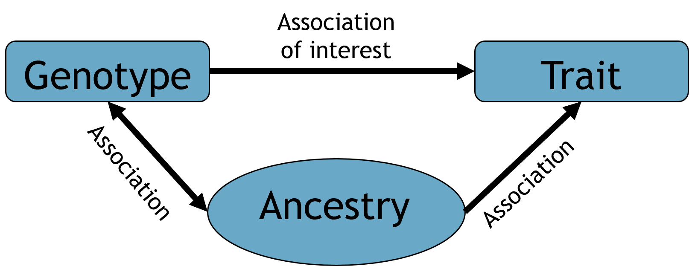
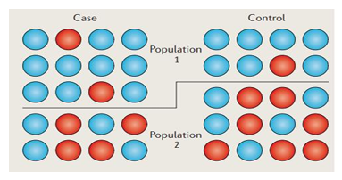
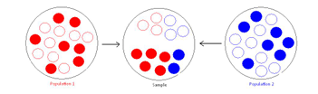
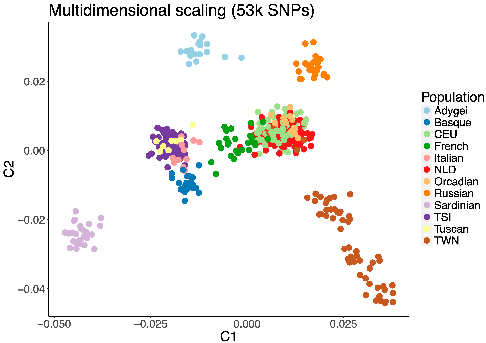
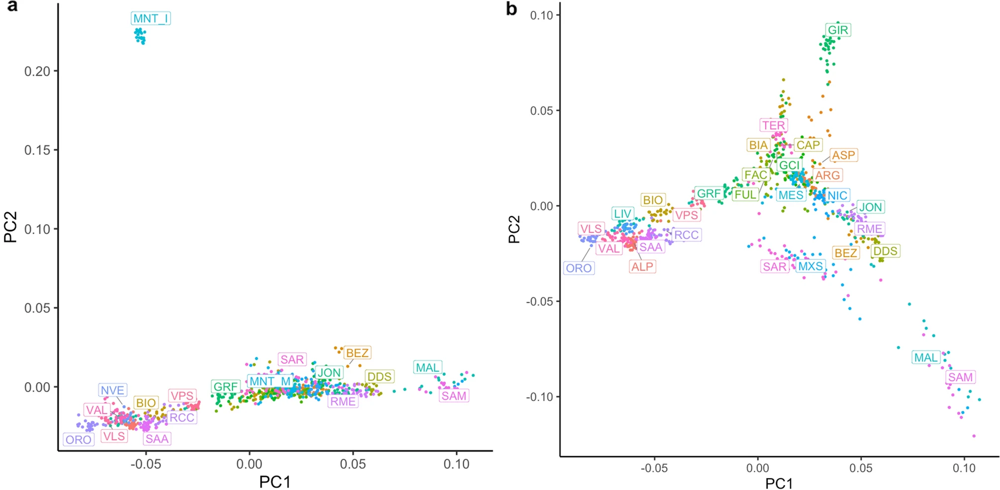
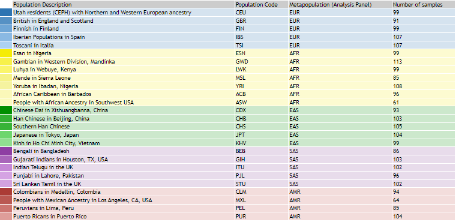

unzip -o Data/1000genomes.zip -d Results/GWAS4
# count lines in fam
wc -l Results/GWAS4/1000genomes.genotypesA.famQuality Control: Strand and mapping correction, anchoring and population covariates
NoteImportant notes for this notebook
In this section, we will explore how to match strands and reference mapping to merge HapMap and 1000GP data. Then, we will use population information from one dataset to decide if there are ethnic outliers in the other. Finally, we will generate population covariates useful for association testing.
Learning outcomes
- Evaluate when and how to apply strand and mapping correction
- Discuss confounding factors that lead to spurious associations
- Identify population substructure and filter out outliers
- Correct for population stratification
How to make this notebook work
In this notebook, we will use both R and bash command line programming languages. Remember to change the kernel whenever you transition from one language to the other (Kernel --> Change Kernel) indicated by the languages’ images.
- We will first run
Bashcommands.
 Choose the Bash kernel
Choose the Bash kernel
Merging, anchoring and making covariates
Population stratification presents a significant source of systematic bias in GWAS, arising when subpopulations exhibit systematic differences in allele frequencies. Research indicates that even subtle degrees of population stratification can exist within a single ethnic population (Abdellaoui et al. 2013). Thus, testing and controlling for the presence of population stratification is an essential QC step.
The population structure (or in other words, the ancestral relationship of the populations) is a so-called confounding factor. This means that it affects both the dependent and independent variables, as shown in the figure below, where both the genotype and traits are influenced by population structure (e.g., the distribution of north and south European individuals in the PCA space and the height of those individuals).

Why is a bias introduced? Population structure can influence allele frequencies and produce false positives/negatives when doing association testing. Graphically, consider the example in the figure below. Case and control for population 1 and 2 have specific MAFs. Removing the barrier between populations will change MAFs drastically for the two confitions.

The same problem arises in population studies without Case-control categories. Imagine having a population of randomly sampled individuals, each from a different ethnicity (the blue and red minor alleles in the example below). The final group of individuals will have a different proportion of MAFs depending on the sampling of various ethnicities.

There are several methods to correct for population stratification Price et al. (2006). Here, we illustrate a method integrated into PLINK: the multidimensional scaling (MDS) approach. MDS calculates the genome-wide average proportion of shared alleles between any pair of individuals to generate quantitative indices (components) of the genetic variation for each individual. The individual component scores can be visualized to identify groups of genetically similar individuals. For instance, in a genetic study including subjects from Asia and Europe, MDS analysis would reveal that Asians are genetically more similar to each other than to Europeans and Africans. The figure below shows another example of MDS using HapMap, Genome diversity project, and authors’ data:

Anchoring
To investigate which individuals the generated component scores deviate from in the target population, plotting the scores of the dataset under investigation and a population of known ethnic structure (e.g., HapMap/1KG data) is helpful: this step is called anchoring (Rietveld et al. 2013). This enables the researcher to obtain ethnic information on their data and to determine possible ethnic outliers. For example, in the figure above, if TSI (Tuscans from Italy) is the anchor population, one can hypothesize that the yellow dots might be ethnically similar (as in the example).
Outlier removal
Outliers identified based on MDS analysis should be excluded from further analyses. Following their removal, a new MDS analysis must be conducted, and its primary components are utilized as covariates in association tests to correct for any residual population stratification within the population. The number of components to include depends on the population structure and sample size (usually 10-20).
The MDS from Cortellari et al. (2021) shows a distinct goat population outlier. The second axis is dominated by this outlier, obscuring structure in the other populations. Removing the outlier reveals a clearer structure among the remaining populations.

Analysis
We aim to merge the HapMap and 1000GP datasets, using 1000GP Phase I as the anchor for HapMap. Our goal is to check if we can identify the ethnicity of the HapMap data based on the ethnicities in the 1000GP dataset. There are several steps to ensure compatibility between the datasets, so stay with us!
1000GP data download
Here are some commands to download and convert the 1000GP data for GWAS analysis. You don’t need to run them, as we’ve already processed the data.
- 1000 Genomes Project - Phase I: genetic information for 629 individuals from various ethnic groups (>60GB). Phase III is now available, and we recommend using it for research purposes.
wget ftp://ftp-trace.ncbi.nih.gov/1000genomes/ftp/release/20100804/ALL.2of4intersection.20100804.genotypes.vcf.gzThe data was converted from the vcf file (Variant Call Format) to plink format (bim, fam, bed):
plink2 --vcf ALL.2of4intersection.20100804.genotypes.vcf.gz --make-bed --out ALL.2of4intersection.20100804.genotypes
Note
The 1000 Genomes data downloaded above is rather large so the commands are not executable and are shown for reference only. To save time, we’ve provided the .bed, .bimand .fam files in the Data folder.
Let’s unzip the files and see how many samples we have.
We have a subset of 37 individuals. Now, let’s explore the bim file.
cat Results/GWAS4/1000genomes.genotypesA.bim | head -5One should note that the file 1000genomes.genotypes.bim contains SNPs without an rs-identifier (or Reference SNP cluster ID). The missing rs-identifiers (noted as .) are not a problem for this tutorial. However, for good practice, we will assign unique identifiers to the SNPs (using available information):
plink --bfile Results/GWAS4/1000genomes.genotypesA \
--set-missing-var-ids @:#[b37]\$1,\$2 \
--make-bed \
--out Results/GWAS4/1000genomes.genotypesA_no_missing_IDs \
--silentNow, let’s visualize the data to check the SNP names assigned. These are derived from the format @:#[b37]\$1,\$2 in the command above, which PLINK interprets as chromosome:locus[b37]Allele1,Allele2:
# Show changes on the bim file
cat Results/GWAS4/1000genomes.genotypesA_no_missing_IDs.bim | head -5Pretty neat, right?
QC on 1000GP data
As we covered in the GWAS3 notebook, it’s important to account for missingness, sex discrepancies, and minor allele frequency. We’ll apply standard QC thresholds to the 1000 GP data before merging it with HapMap data.
plink --bfile Results/GWAS4/1000genomes.genotypesA_no_missing_IDs \
--geno 0.02 \
--make-bed \
--out Results/GWAS4/1kG_MDS --silent
plink --bfile Results/GWAS4/1kG_MDS \
--mind 0.02 \
--make-bed \
--out Results/GWAS4/1kG_MDS2 --silent
plink --bfile Results/GWAS4/1kG_MDS2 \
--maf 0.05 \
--make-bed \
--out Results/GWAS4/1kG_MDS3 --silentSNPs matching between datasets
N.B: Ensure that the datasets you want to merge share the same genomic build! Otherwise, you’ll need to include a liftover step.
We want to only consider SNPs that both datasets have in common. First, extract SNP names from the HapMap data and filter the 1000GP data to include only matching SNPs.
#Print out SNPs from the HapMap data
awk '{print$2}' Results/GWAS4/HapMap_3_r3_9.bim > Results/GWAS4/HapMap_SNPs.txt
#Extract the HapMap SNPs from the 1000GP data
plink --bfile Results/GWAS4/1kG_MDS3 \
--extract Results/GWAS4/HapMap_SNPs.txt \
--make-bed \
--out Results/GWAS4/1kG_MDS4This is how part of the list of SNP names looks like:
cat Results/GWAS4/HapMap_SNPs.txt | head -5Now we take the variants from the reduced 1000GP data, and go the other way around. We extract 1000GP variants from the HapMap data. In other words, the two extraction passages will intersect the SNPs. Below is the code to use the SNPs of the 1000GP data to reduce the HapMap data.
#Print out SNPs from the HapMap data
awk '{print$2}' Results/GWAS4/1kG_MDS4.bim > Results/GWAS4/1kG_MDS4_SNPs.txt
#Extract the HapMap SNPs from the 1000GP data
plink --bfile Results/GWAS4/HapMap_3_r3_9 \
--extract Results/GWAS4/1kG_MDS4_SNPs.txt \
--make-bed \
--out Results/GWAS4/HapMap_MDS
ImportantStop - Read - Solve
Look at the two outputs below a bit more carefully. The names are all matching. Is there any other problem?
head Results/GWAS4/HapMap_MDS.bimhead Results/GWAS4/1kG_MDS4.bimBuild matching
Genomic data is based on a reference genome, and our datasets use different human reference versions. Since the reference genome improves over time, SNP positions may differ between datasets from different versions.
We extract SNP names and positions from the HapMap data and align the 1000GP data to match these SNPs using the --update-map option in PLINK.
#Extract the HapMap variant coordinates
awk '{print$2,$4}' Results/GWAS4/HapMap_MDS.bim > Results/GWAS4/buildhapmap.txtThis is how the list of SNPs look like:
cat Results/GWAS4/buildhapmap.txt | head -5We run PLINK to update the 1000GP variant coordinates based on HapMap, ignoring the warning about unsorted positions:
plink --bfile Results/GWAS4/1kG_MDS4 \
--update-map Results/GWAS4/buildhapmap.txt \
--make-bed \
--out Results/GWAS4/1kG_MDS5Merging datasets and performing MDS
Before merging the HapMap and 1000 Genomes datasets, we ensure compatibility through 3 steps:
- Verify the reference genome is compatible in both datasets.
- Align SNP orientations (strand) across datasets.
- Remove SNPs that still differ after these steps.
The next steps are technical but ensure the datasets correspond correctly.
1. We’ve matched SNP positions, but we also need to ensure the reference alleles align. Remember that most PLINK analyses consider the A1 allele (typically the minor allele) as the reference allele, which is logical when dealing exclusively with biallelic variants.
Below, we generate a list of SNPs ID and ‘reference alleles’ (corresponding to A1, column 5 of the .bim file) from 1000GP.
#Extract variant coordinates and reference alleles from 1000GP data
awk '{print$2,$5}' Results/GWAS4/1kG_MDS5.bim > Results/GWAS4/1kg_ref-list.txtHow the list looks like:
head -5 Results/GWAS4/1kg_ref-list.txtThen, we assign them to the HapMap data --ref-allele option. Note a lot fo warnings in A1 allele assignment. This is usually because you have a strand issue, where the data uses a complement
plink --bfile Results/GWAS4/HapMap_MDS \
--make-bed \
--reference-allele Results/GWAS4/1kg_ref-list.txt \
--out Results/GWAS4/HapMap-adj 2. To resolve strand issues, we flip SNPs found in both datasets with complementary alleles (i.e. they were reported in opposite strands). We generate SNP lists (ID and alleles) for both datasets, identify unique SNPs, and visualize differences in allele reporting. If a SNP is unique but reports alleles differently, it will appear twice. Below are examples of SNPs with strand issues from the 1000GP and HapMap data:
#print SNP and A1 A2 alleles on files for the two datasets
awk '{print$2,$5,$6}' Results/GWAS4/1kG_MDS5.bim > Results/GWAS4/1kGMDS5_tmp
awk '{print$2,$5,$6}' Results/GWAS4/HapMap-adj.bim > Results/GWAS4/HapMap-adj_tmp
#sort by SNP name to see SNPs with complementary alleles
sort Results/GWAS4/1kGMDS5_tmp Results/GWAS4/HapMap-adj_tmp | uniq -u > Results/GWAS4/all_differences.txthead -6 Results/GWAS4/all_differences.txtHow many of these differences are there? We can count 604 lines, so 302 SNPs
wc -l Results/GWAS4/all_differences.txtSome of these differences might be might be due to strand issues.
Let’s look at this variant rs10006274. Will it be flipped in the HapMap dataset?
The answer is yes! If we look at the reference allele in 1kg_ref-list.txt, it shows C. This means the SNP is on the forward strand in 1000GP (C/T) and on the reverse strand in HapMap (G/A).
grep rs10006274 Results/GWAS4/1kg_ref-list.txtgrep rs10006274 Results/GWAS4/all_differences.txt
ImportantStop - Read - Solve
Look at these other SNPs: rs9614750 and rs10088098.
- Which ones will have to be flipped?
- Is it always the same dataset that must be flipped?
# Write your code here
TipSolution
We will first print out the SNPs from the reference file to know which line corresponds to each dataset (since we know we used the 1000 Genomes Project as the reference). If there are strand issues, the SNP will need to be flipped in the dataset that wasn’t used as the reference.
grep rs9614750 Results/GWAS4/1kg_ref-list.txt grep rs9614750 Results/GWAS4/all_differences.txtFor rs9614750, the genotype is reported as A/G in the 1000GP data, while in HapMap, it is C/G. This discrepancy between the two datasets means that the SNP will need to be removed later.
grep rs10088098 Results/GWAS4/1kg_ref-list.txt grep rs10088098 Results/GWAS4/all_differences.txtFor rs10088098, the genotype is reported as C/T in the 1000GP data, while in HapMap, it is G/A. This means that PLINK will flip the allele, as they are complementary.
Now we take only the SNP names and give them to PLINK (option --flip), together with the reference genome (option --reference-allele):
## Flip SNPs for resolving strand issues.
# Print SNP-identifier and remove duplicates.
awk '{print$1}' Results/GWAS4/all_differences.txt | sort -u > Results/GWAS4/flip_list.txtwc -l Results/GWAS4/flip_list.txtThese are the SNP ID of non-corresponding SNPs (N=302) between the two files.
head -5 Results/GWAS4/flip_list.txtApply the flipping option:
plink --bfile Results/GWAS4/HapMap-adj \
--flip Results/GWAS4/flip_list.txt \
--reference-allele Results/GWAS4/1kg_ref-list.txt \
--make-bed \
--out Results/GWAS4/corrected_hapmap \
--silent
ImportantStop - Read - Solve
There might still be problematic SNPs after flipping.
- Check if the expected allele flip occurred.
Hint: use grep to find the rs10006274 and rs9614750 variants; then compare the alleles assignments in the HapMap file before and after flipping.
# Write your code here
TipSolution
PLINK attempts to flip all SNPs in the list, but an error occurs when A1 does not match the one in the reference.
Notice how this SNP has changed as we predicted:
grep rs10006274 Results/GWAS4/corrected_hapmap.bimgrep rs10006274 Results/GWAS4/HapMap-adj.bimrs10006274 was flipped and has the same strand orientation in both datasets (same alleles in A1 and A2).
What happened to this one? PLINK attempts to resolve the mismatch by flipping the alleles but throws an error because the complementary alleles do not match the reference!
grep rs9614750 Results/GWAS4/corrected_hapmap.bimgrep rs9614750 Results/GWAS4/HapMap-adj.bim
Note
You don’t need to flip the 1000GP data because the reference allele (A1) in the 1000GP data already matches the strand orientation used in the HapMap data.
3. After flipping SNPs, some differ in their alleles when comparing datasets to each other (e.g. SNP rs9614750) and such SNPs must be removed.
We extract the SNPs from the corrected HapMap data and search for unique SNP (ID, A1, and A2), comparing them with those from the 1000GP data.
awk '{print$2,$5,$6}' Results/GWAS4/corrected_hapmap.bim > Results/GWAS4/corrected_hapmap_tmp
sort Results/GWAS4/1kGMDS5_tmp Results/GWAS4/corrected_hapmap_tmp | uniq -u > Results/GWAS4/uncorresponding_SNPs.txtHow many SNP mismatches are there?
wc -l Results/GWAS4/uncorresponding_SNPs.txtThis corresponds to 12 unique SNP IDs with mismatched information.
head Results/GWAS4/uncorresponding_SNPs.txt We extract again the SNP IDs from the file above, and exclude them using the PLINK option --exclude in both datasets
awk '{print$1}' Results/GWAS4/uncorresponding_SNPs.txt | sort -u > Results/GWAS4/SNPs_for_exclusion.txt
plink --bfile Results/GWAS4/corrected_hapmap \
--exclude Results/GWAS4/SNPs_for_exclusion.txt \
--make-bed \
--out Results/GWAS4/HapMap_MDS3 \
--silent
plink --bfile Results/GWAS4/1kG_MDS5 \
--exclude Results/GWAS4/SNPs_for_exclusion.txt \
--make-bed \
--out Results/GWAS4/1kG_MDS6 \
--silent5. We can finally merge the data! We provide our dataset (-bfile) and the one to add (--bmerge option):
plink --bfile Results/GWAS4/corrected_hapmap \
--bmerge Results/GWAS4/1kG_MDS6.bed Results/GWAS4/1kG_MDS6.bim Results/GWAS4/1kG_MDS6.fam \
--allow-no-sex \
--make-bed \
--out Results/GWAS4/MDS_merge \
--silentPerform MDS on HapMap-CEU data anchored by 1000 Genomes data.
MDS is typically performed on independent SNPs (pruned SNPs). We have previously identified such SNPs in this course, so we will extract only these SNPs for the analysis.
plink --bfile Results/GWAS4/MDS_merge \
--extract Results/GWAS3/indepSNP.prune.in \
--genome \
--out Results/GWAS4/MDS_merge \
--silentNow, we can use PLINK to run MDS with the option ---mds-plot specifying the number of components to calculate.
# mds-plot
plink --bfile Results/GWAS4/MDS_merge \
--read-genome Results/GWAS4/MDS_merge.genome \
--cluster \
--mds-plot 10 \
--out Results/GWAS4/MDS_merge \
--silentFor visualization purposes, we downloaded the 1000 Genomes Project (1000GP) panel, which includes individual names and their corresponding population information.
wget ftp://ftp.1000genomes.ebi.ac.uk/vol1/ftp/release/20100804/20100804.ALL.panel -P Results/GWAS4 -qTo determine the population origins of HapMap individuals, we created a new file that combines the 1000GP panel information with the HapMap data, labeling the population HapMap entries as ‘OWN’.
awk '{print$1,$2,"OWN"}' Results/GWAS4/HapMap_MDS.fam > Results/GWAS4/popfile_own.txt
awk '{print$1,$1,$2}' Results/GWAS4/20100804.ALL.panel > Results/GWAS4/20100804.ALL.panel.txt
cat <(echo "FID IID POP") Results/GWAS4/20100804.ALL.panel.txt Results/GWAS4/popfile_own.txt > Results/GWAS4/popfile.txt
Note
The 1000 Genomes Project (1000GP) categorizes individuals into major continental groups—such as Europeans (EUR), Africans (AFR), Americans (AMR), East Asians (EAS), and South Asians (SAS)—each comprising various subpopulations. We will use this population structure information to visualize and determine the clusters our samples belong to.

 Switch to the R kernel.
Switch to the R kernel.
Let’s visualize population stratification using the multidimensional scaling (MDS) results.
options(repr.plot.width = 12, repr.plot.height = 6)
suppressMessages(suppressWarnings(library(ggplot2)))
# Read data into R
data <- read.table(file="Results/GWAS4/MDS_merge.mds",header=TRUE)
pop <- read.table(file="Results/GWAS4/popfile.txt",header=TRUE)
datafile <- merge(data,pop,by=c("FID","IID"))
# Metapopulation information for the population in the 1000GP dataset
superpop <- c(
"JPT" = "ASN",
"ASW" = "AFR",
"CEU" = "EUR",
"CHB" = "ASN",
"CHD" = "ASN",
"YRI" = "AFR",
"LWK" = "AFR",
"TSI" = "EUR",
"MXL" = "AMR",
"GBR" = "EUR",
"FIN" = "EUR",
"CHS" = "ASN",
"PUR" = "AMR",
"OWN" = "UN"
)
# add metapopulation info to the table
datafile$SUPERPOP <- superpop[datafile$POP]
# Plotting
scatter.mds <- ggplot(datafile, aes(x=C1, y=C2, color=SUPERPOP)) +
geom_point(size=5, alpha=.4) +
scale_color_manual(values=c("AFR" = "red", "AMR" = "springgreen4", "ASN" = "gold", "EUR" = "blue", "UN" = "grey" )) +
xlab("MD Component 1") +
ylab("MD Component 2") +
labs(color="Superpop") +
theme_bw() +
theme(axis.title = element_text(size = 14), legend.text = element_text(size = 15),
axis.text = element_text(size = 14), legend.title=element_text(size=15))
show(scatter.mds)The HapMap data clusters closely with European populations such as CEU, TSI, IBS, GBR, and FIN, confirming its European composition. Additionally, the absence of distant points indicates no outliers in the HapMap dataset (grey datapoints cluster together).
Exclude ethnic outliers
To control for population structure, individuals that deviate substantially from their genetically inferred ancestry cluster are often excluded. A common approach is to calculate genetic principal components (PCs) and compute each individual’s Mahalanobis or Euclidean distance from the center of their assigned cluster; individuals beyond a predefined threshold (e.g., >4 standard deviations) are considered population outliers and removed from downstream analysis.
Now, imagine we want to consider only European individuals for a specific analysis where we want only such a homogeneous population. Then the rest of the individuals would be considered outliers.
ImportantStop - Read - Solve
Based on the PCA plot, visually inspect the distribution of individuals along the top principal components and determine approximate threshold values beyond which samples should be considered outliers and excluded. What cutoff values would you apply in this context, and why?
TipSolution
Based on the position of the target population’s cluster in the MDS plot, we will exclude individuals that fall outside the European cluster in the PCA.
 Switch to the Bash kernel. Let’s see how the MDS table is structured:
Switch to the Bash kernel. Let’s see how the MDS table is structured:
head -3 Results/GWAS4/MDS_merge.mds | cut -f1-6 -d$'\t'The first three columns denote samples, while C1, C2, … are MDS components. We will select the individuals we want to keep based on coordinates C1, C2, so the area to be chosen has to be C1<0 and C2<0.05. Thus we take the values in columns 4 and 5 of the file , and extract the individuals using PLINK with the option --keep.
#print samples to keep in a file
awk '{ if ($4 <0 && $5<0.05) print $1,$2 }' Results/GWAS4/MDS_merge.mds > Results/GWAS4/EUR_MDS_merge
#use the keep --option
plink --bfile Results/GWAS4/MDS_merge \
--keep Results/GWAS4/EUR_MDS_merge \
--make-bed \
--out Results/GWAS4/EUR_MDS_mergeHow many people are we left with? see the output message above or find the log file
grep "remaining" Results/GWAS4/EUR_MDS_merge.logCreating covariates for GWAS analysis
The 10 MDS dimensions will be used as covariates in the association analysis in the next tutorial to correct for population stratification. The covariate file is created by removing column 3 (SOL, optional metadata) from the MDS output file.
ImportantStop - Read - Solve
Why are we computing the covariates again?
TipSolution
The data has been filtered, and the remaining samples will have a very tight MDS structure, since they were projected in relationship to other very different samples. Now we might want to capture some substructure in the CEU population instead.
This time we will not use MDS projection, but the PCA implemented in PLINK2. In our dataset this will not change much (actually it might be a bit slower, because it also recalculates the relatedness matrix and normalizes it), but for large datasets PCA is faster, and you can also use an approximated PCA which is even faster on many thousands of samples (all details here in the manual). The default is to calculate ten components, but you can for example choose more as we fo here. biallelic-var-wts ensures PLINK2 does not apply its own filtering to our data.
plink2 --bfile Results/GWAS4/EUR_MDS_merge \
--pca 20 biallelic-var-wts \
--out Results/GWAS4/EUR_MDS_mergeThe output file looks like this, where the PCA components start from the third columns
head Results/GWAS4/EUR_MDS_merge.eigenvec Switch to the R kernel. Let’s print the PCA again.
Switch to the R kernel. Let’s print the PCA again.
library(ggplot2)
library(data.table) # For fast data reading
# Load the PCA eigenvector file
pca_data <- fread("Results/GWAS4/EUR_MDS_merge.eigenvec", header = TRUE)
# Preview the data
head(pca_data)
dim(pca_data)We can see some substructure, where most individuals are tightly clustered together.
ggplot(pca_data, aes(x = PC1, y = PC2)) +
geom_point(size = 2, alpha = 0.8) +
labs(title = "PCA of GWAS CEU data",
x = "PC1",
y = "PC2") +
theme_minimal() +
theme(legend.position = "right") Switch to the Bash kernel.
Switch to the Bash kernel.
To make the file usable as a covariate we remove the very first character # from the column name of the PCA output:
sed 's/^#//' Results/GWAS4/EUR_MDS_merge.eigenvec > Results/GWAS4/covar_pca.txtThe covar_pca.txt now looks like this
head -5 Results/GWAS4/covar_pca.txtinstead of
head -5 Results/GWAS4/EUR_MDS_merge.eigenvec
NoteWrapping up
You have now successfully checked your data for relatedness population stratification. You filtered out the individuals with high relatedness and produced a summary of the population structure using the MDS projection. You will use the MDS coordinates as a proxy for the population structure you want your association testing to be corrected for.
In the next notebook on Association Testing, you will need the following files from the folder Results/GWAS4/:
EUR_MDS_mergePLINK file setcovar_pca.txt
which are the HapMap data and the MDS covariates, highlighting population stratification within the European cluster. Those are already available once you have been running this notebook.
Below is a cheat sheet of our new methods of QC.
| Step | Command | Function | Thresholds and explanation |
|---|---|---|---|
| 7: Population Stratification | --cluster --mds-plot k (PLINK) |
Produces a k‐dimensional representation of any substructure in the data, based on IBS. | K is the number of dimensions, which needs to be defined (typically 10). This is an important step in the QC process that consists of multiple procedures; however, for the sake of completeness, we briefly refer to this step in the table. This step will be described in more detail in the section “Controlling for population stratification.” |
| - | --pca k biallelic-var-wts (PLINK2) |
produces a PCA projection with k principal components, based on the normalized genetic relationship matrix. biallelic-var-wts ensures that PLINK2’s own filtering is not applied. |
- |
Bibliography
Abdellaoui, Abdel, Jouke-Jan Hottenga, Peter de Knijff, et al. 2013. “Population Structure, Migration, and Diversifying Selection in the Netherlands.” European Journal of Human Genetics 21 (11): 1277–85.
Cortellari, Matteo, Mario Barbato, Andrea Talenti, et al. 2021. “The Climatic and Genetic Heritage of Italian Goat Breeds with Genomic SNP Data.” Scientific Reports 11 (1): 10986. https://doi.org/10.1038/s41598-021-89900-2.
Price, Alkes L., Nick J. Patterson, Robert M. Plenge, Michael E. Weinblatt, Nancy A. Shadick, and David Reich. 2006. “Principal Components Analysis Corrects for Stratification in Genome-Wide Association Studies.” Nature Genetics 38 (8): 904–9. https://doi.org/10.1038/ng1847.
Price, Alkes L, Noah A Zaitlen, David Reich, and Nick Patterson. 2010. “New Approaches to Population Stratification in Genome-Wide Association Studies.” Nature Reviews Genetics 11 (7): 459–63.
Rietveld, Cornelius A, Sarah E Medland, Jaime Derringer, et al. 2013. “GWAS of 126,559 Individuals Identifies Genetic Variants Associated with Educational Attainment.” Science 340 (6139): 1467–71.
Somers, Metten, Loes M. Olde Loohuis, Maartje F. Aukes, et al. 2017. “A Genetic Population Isolate in The Netherlands Showing Extensive Haplotype Sharing and Long Regions of Homozygosity.” Genes 8 (5): 133. https://doi.org/10.3390/genes8050133.
Copyright
CC-BY-SA 4.0 license